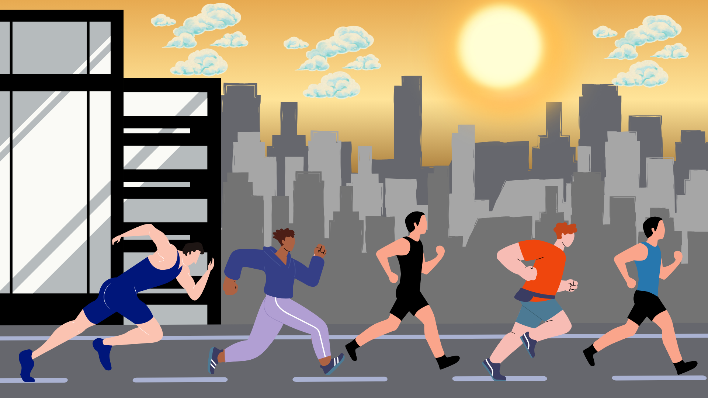
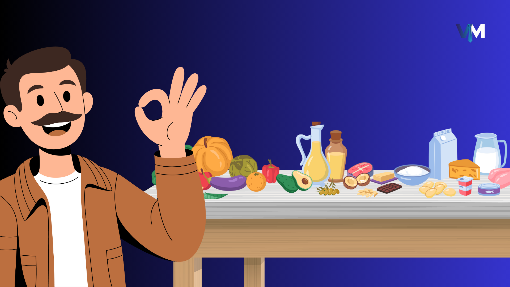

Os 5 Melhores Exercícios de Mobilidade para Fazer Pela Manhã
Comece seu dia com mais energia e menos dores. Estes exercícios rápidos vão transformar suas manhãs.

Comece seu dia com mais energia e menos dores. Estes exercícios rápidos vão transformar suas manhãs.

Analisamos os prós e contras do jejum intermitente e como ele pode impactar sua testosterona e bem-estar.